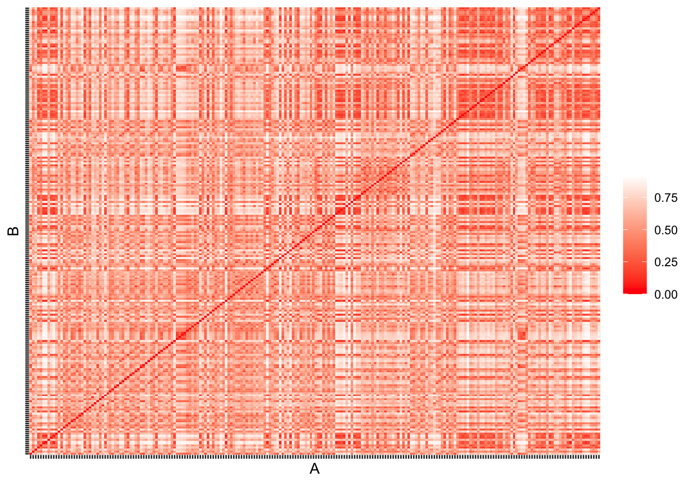
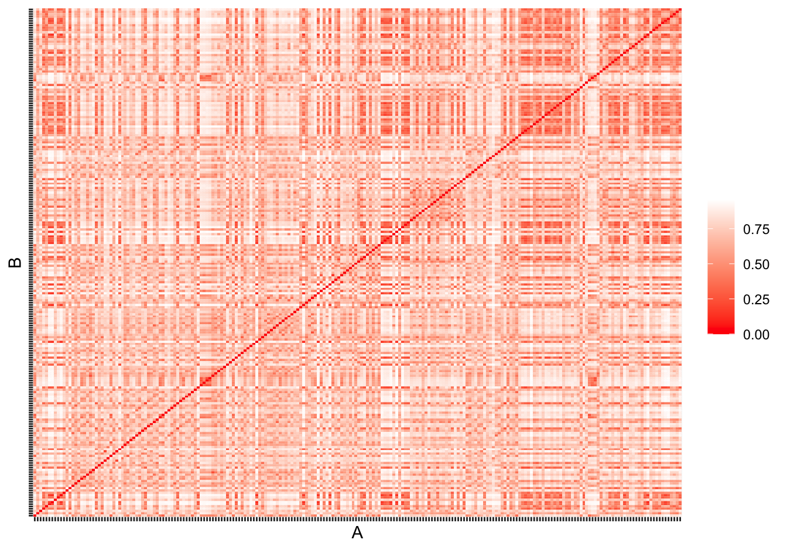
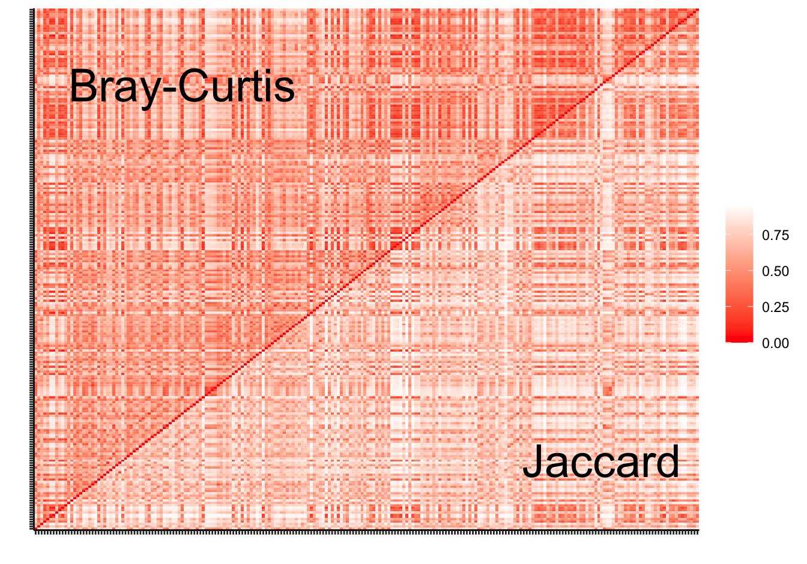

3 Beta diversity
Bray-Curtis
library(vegan)
ps <- ps
otutable <- otu_table(ps) %>%
psmelt() %>%
group_by(Sample) %>%
mutate(N = sum(Abundance)) %>%
ungroup()
n=min(otutable$N)
otutable <- otutable %>%
filter(N >= n) %>%
select(-N) %>%
pivot_wider(names_from="OTU", values_from="Abundance", values_fill=0) %>%
column_to_rownames("Sample")
## Getting Bray-`Curtis` distances
bray <- avgdist(otutable, dmethod="bray", sample=1776) %>%
as.matrix() %>%
as_tibble(rownames = "A") %>%
pivot_longer(-A, names_to="B", values_to="distances")
bray %>%
ggplot(aes(x=A, y=B, fill=distances)) +
geom_tile() +
theme(axis.text = element_blank()) +
scale_fill_gradient(low="#FF0000", high="#FFFFFF", name=NULL)
Jaccard
## Getting `Jaccard` distances
jaccard <- avgdist(otutable, dmethod="jaccard", sample=1776) %>%
as.matrix() %>%
as_tibble(rownames = "A") %>%
pivot_longer(-A, names_to="B", values_to="distances")
jaccard %>%
ggplot(aes(x=A, y=B, fill=distances)) +
geom_tile() +
theme(axis.text = element_blank()) +
scale_fill_gradient(low="#FF0000", high="#FFFFFF", name=NULL)
Bray-Curtis and Jaccard
labels <- tibble(
x=c(50, 190),
y=c(190, 30),
label=c("Bray-Curtis", "Jaccard")
)
inner_join(bray, jaccard, by=c("A", "B")) %>%
select(A, B, bray=distances.x, jaccard=distances.y) %>%
mutate(distances = if_else(A < B, bray, jaccard)) %>%
ggplot(aes(x=A, y=B, fill=distances)) +
geom_tile() +
geom_text(data=labels, aes(x=(x), y=y, label=label), inherit.aes=FALSE,
size=10) +
scale_fill_gradient(low="#FF0000", high="#FFFFFF", name=NULL) +
labs(x="", y="") +
theme_classic() +
theme(axis.text = element_blank())